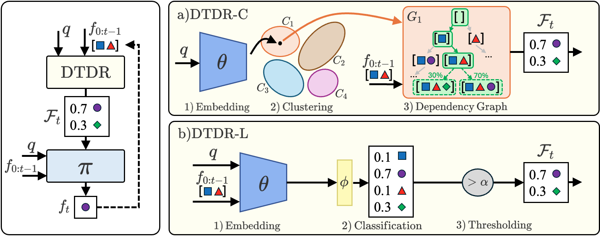
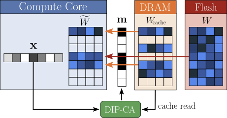
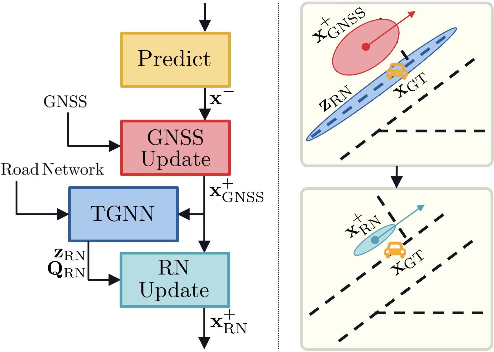
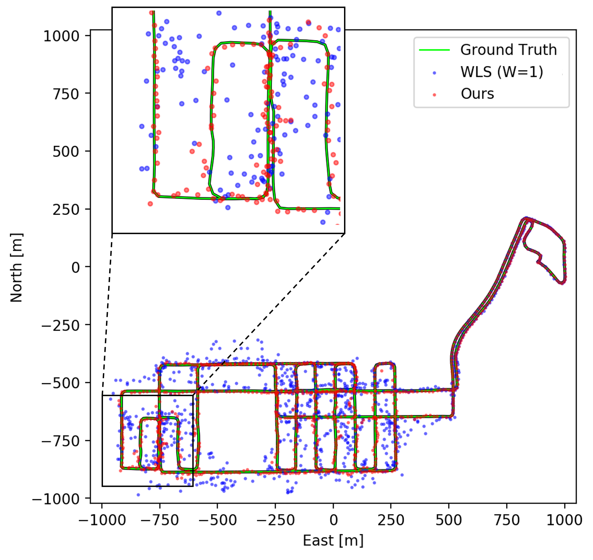
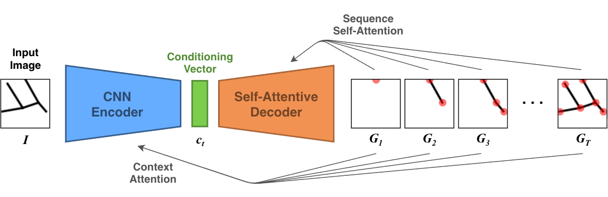
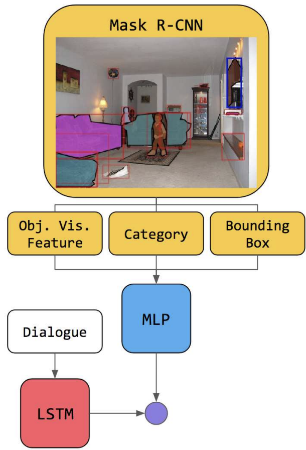

Research
Publications and Patents
Publications

2026
AAAI 2026 IR Frontiers workshop (Oral)

2025
MLSys 2025

2025
ICML 2025 ML4Wireless workshop

2023
ION GNSS+ 2023

2019
NeurIPS 2019 GRL workshop

2018
ECCV 2018 SiVL workshop
* indicates equal contribution
Patents
Granted Patents
-
Adaptive personalization for anti-spoofing protection in biometric authentication systemsUS Patent 12,314,365, 2025
Pending Patent Applications
-
Architectures and Representations for Agentic AIUS Patent App. 19/440,522, 2026
-
System and Method of Tool Dependency Learning for Function Calling AI AgentsUS Patent App. 19/458,639, 2026
-
System and Method for Efficient Plan Sampling From Function Calling LLMsUS Patent App. 19/406,680, 2025
-
Deep Learning methods for Road Network assisted GNSS positioningUS Patent App. 19/299,160, 2025
-
Test-time Scaling for Single-turn Function CallingUS Patent App. 19/270,192, 2025
-
Geometric representation and temporal modeling for GNSS localizationUS Patent App. 19/040,909, 2025
-
Cache-aware dynamic module selectionUS Patent App. 18/902,554, 2025
-
Global navigation satellite systems (gnss) localization with residual grid representationUS Patent App. 18/630,717, 2025
-
Optimizing weighted least square (wls) inputs to improve global navigation satellite systems (gnss) localizationUS Patent App. 18/177,713, 2024
-
Personalized biometric anti-spoofing protection using machine learning and enrollment dataUS Patent App. 17/658,573, 2022